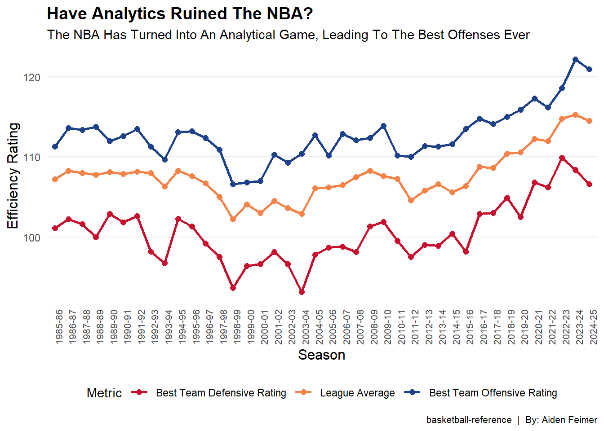

Code
library(ggplot2)
library(dplyr)
Attaching package: 'dplyr'The following objects are masked from 'package:stats':
filter, lagThe following objects are masked from 'package:base':
intersect, setdiff, setequal, unionCode
library(gridExtra)
Attaching package: 'gridExtra'The following object is masked from 'package:dplyr':
combineCode
library(tidyverse)── Attaching core tidyverse packages ──────────────────────── tidyverse 2.0.0 ──
✔ forcats 1.0.0 ✔ stringr 1.5.1
✔ lubridate 1.9.4 ✔ tibble 3.2.1
✔ purrr 1.0.4 ✔ tidyr 1.3.1
✔ readr 2.1.5 ── Conflicts ────────────────────────────────────────── tidyverse_conflicts() ──
✖ gridExtra::combine() masks dplyr::combine()
✖ dplyr::filter() masks stats::filter()
✖ dplyr::lag() masks stats::lag()
ℹ Use the conflicted package (<http://conflicted.r-lib.org/>) to force all conflicts to become errorsCode
nba_data <- data.frame(
season = c("1985-86", "1986-87", "1987-88", "1988-89", "1989-90",
"1990-91", "1991-92", "1992-93", "1993-94", "1994-95",
"1995-96", "1996-97", "1997-98", "1998-99", "1999-00",
"2000-01", "2001-02", "2002-03", "2003-04", "2004-05",
"2005-06", "2006-07", "2007-08", "2008-09", "2009-10",
"2010-11", "2011-12", "2012-13", "2013-14", "2014-15",
"2015-16", "2016-17", "2017-18", "2018-19", "2019-20",
"2020-21", "2021-22", "2022-23", "2023-24", "2024-25"),
offense = c(111.3, 113.6, 113.4, 113.8, 112.0,
112.6, 113.5, 111.3, 109.7, 113.1,
113.2, 112.4, 110.9, 106.6, 106.8,
107.0, 110.3, 109.3, 110.4, 112.7,
110.2, 112.9, 112.1, 112.4, 113.9,
110.2, 110.0, 111.4, 111.3, 111.6,
113.5, 114.8, 114.1, 115.0, 115.9,
117.3, 116.2, 118.6, 122.2, 121.0),
defense = c(101.1, 102.2, 101.6, 100.0, 102.9,
101.8, 102.6, 98.2, 96.7, 102.3,
101.3, 99.2, 97.5, 93.6, 96.4,
96.6, 98.1, 96.6, 93.1, 97.8,
98.7, 98.8, 98.1, 101.3, 101.9,
99.5, 97.5, 99.0, 98.9, 100.4,
98.2, 102.9, 103.0, 104.9, 102.5,
106.8, 106.2, 109.9, 108.4, 106.6),
league_avg = c(107.2, 108.3, 108.0, 107.8, 108.1,
107.9, 108.2, 108.0, 106.3, 108.3,
107.6, 106.7, 105.0, 102.2, 104.1,
103.0, 104.5, 103.6, 102.9, 106.1,
106.2, 106.5, 107.5, 108.3, 107.6,
107.3, 104.6, 105.8, 106.6, 105.6,
106.4, 108.8, 108.6, 110.4, 110.6,
112.3, 112.0, 114.8, 115.3, 114.5)
)
my_caption <- "basketball-reference | By: Aiden Feimer"
nba_data$season <- factor(nba_data$season, levels = nba_data$season)
nba_data_long <- nba_data %>%
select(season, offense, defense, league_avg) %>%
pivot_longer(cols = c("offense", "defense", "league_avg"),
names_to = "efficiency_type",
values_to = "rating")
ggplot(nba_data_long, aes(x = season, y = rating, group = efficiency_type, color = efficiency_type)) +
geom_line(size = 1) +
geom_point(size = 2) +
scale_color_manual(values = c("offense" = "#1d428a", "defense" = "#c8102e", "league_avg" = "#f58246"),
labels = c("offense" = "Best Team Offensive Rating",
"defense" = "Best Team Defensive Rating",
"league_avg" = "League Average")) +
labs(title = "Have Analytics Ruined The NBA?",
subtitle = "The NBA Has Turned Into An Analytical Game, Leading To The Best Offenses Ever",
x = "Season",
y = "Efficiency Rating",
color = "Metric",
caption = my_caption) +
theme_minimal() +
theme(
plot.title = element_text(size = 14, face = "bold"),
axis.title.x = element_text(size = 12),
axis.title.y = element_text(size = 12),
axis.text.x = element_text(angle = 90, hjust = 1, size = 8),
legend.position = "bottom",
panel.grid.minor = element_blank(),
panel.grid.major.x = element_blank(),
plot.caption = element_text(hjust = 1, size = 8)
)Warning: Using `size` aesthetic for lines was deprecated in ggplot2 3.4.0.
ℹ Please use `linewidth` instead.